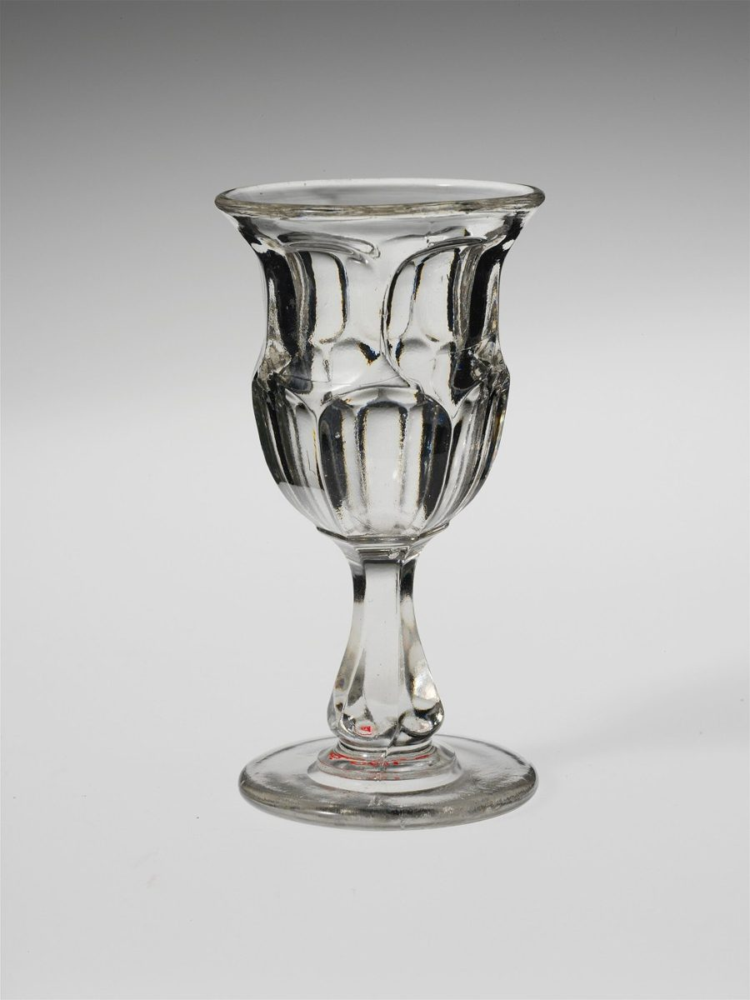

制作側の連想
Vベルトの断面を、六つの部位に切り分ける
この試作ページは、制作側が「Vベルトの断面図」から連想して作りました。台形のベルトを層ごとに分けて名前を付ける図のように、ページを部位に見立てて並べています。お店の理念・由来とは無関係の、制作側の連想です。屋号の読み方や由来は分かりません。
写真(イメージ)
断面のとなりに、素材の写真
写真は龍郷町のものではなく、国外・撮影地不明のフリー素材です。お店の様子ではありません。



ご案内
お店のこと(確認できたものだけ)
| 所在地 | 〒894-0412 鹿児島県大島郡龍郷町芦徳339-2 |
|---|---|
| 電話 | 準備中 |
| 営業時間 | 準備中 |
| 定休日 | 準備中 |
| ご予約 | 準備中 |
| 駐車場 | 準備中 |
| SNS | Instagram @cafe_asyo |